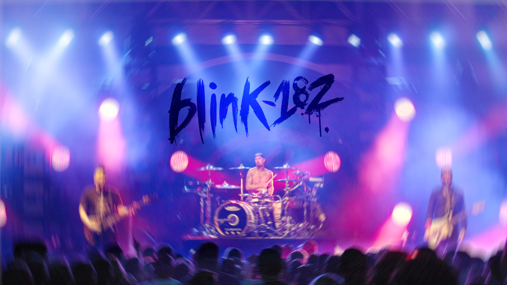
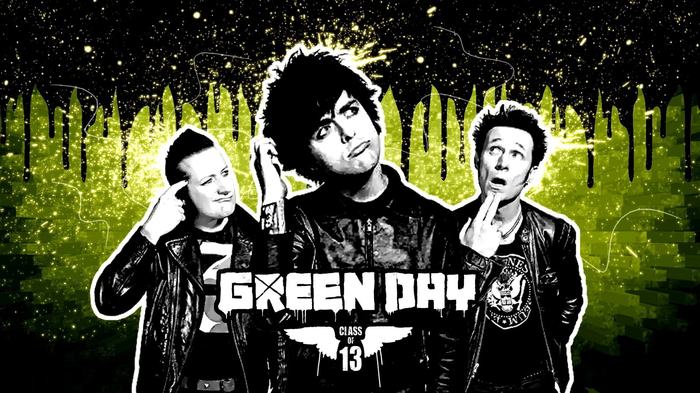
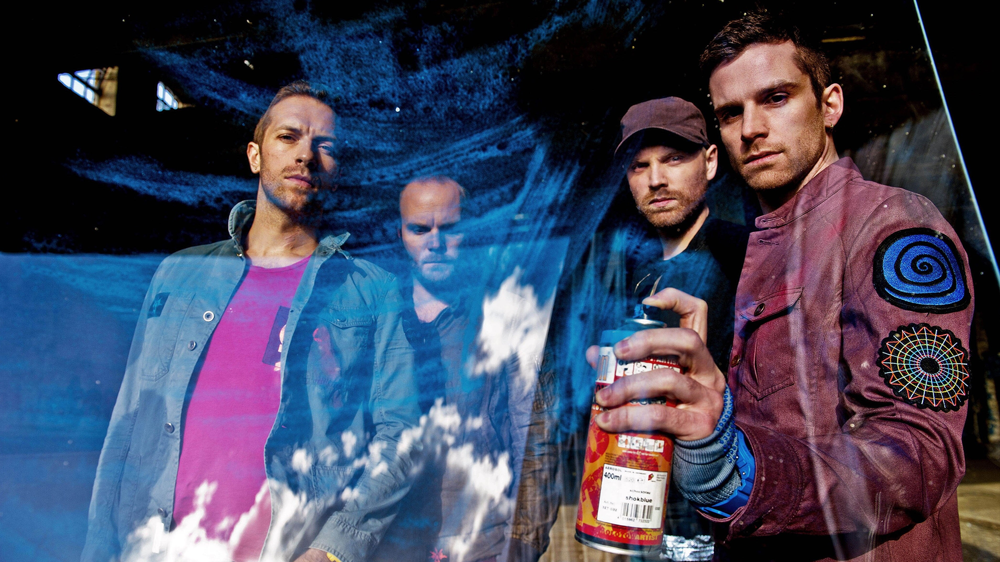

What Genres Music I Like?
My Top Genres Music List
1. Pop Punk
Pop-punk (or punk-pop) is a rock music genre that combines elements of punk rock with power pop or pop. It is defined for its emphasis on classic pop songcraft, as well as adolescent and anti-suburbia themes, and is distinguished from other punk-variant genres by drawing more heavily from 1960s bands such as the Beatles, the Kinks, and the Beach Boys. The genre has evolved throughout its history, absorbing elements from new wave, college rock, ska, rap, emo, and boy bands. It is sometimes considered interchangeable with power pop and skate punk.
Pop-punk emerged in the late 1970s with groups such as the Ramones, the Undertones, and the Buzzcocks. 1980s punk bands like Bad Religion, Descendents and the Misfits were influential to pop punk, and pop punk expanded in the 1980s and early 1990s by a host of bands signed to Lookout! Records, including Screeching Weasel, the Queers, and the Mr. T Experience. In the mid–late 1990s, the genre saw a massive widespread popularity increase with bands like Green Day, the Offspring and Blink-182. The genre was further popularized by the Warped Tour. Pop-punk's success continued in the early 2000s with artists such as Avril Lavigne, Sum 41, Good Charlotte and New Found Glory.
2. Punk Rock
Punk rock (also known as simply punk) is a music genre that emerged in the mid-1970s. Rooted in 1960s garage rock, punk bands rejected the perceived excesses of mainstream 1970s rock. They typically produced short, fast-paced songs with hard-edged melodies and singing styles, stripped-down instrumentation, and often shouted political, anti-establishment lyrics. Punk embraces a DIY ethic; many bands self-produce recordings and distribute them through independent record labels.
The term "punk rock" was previously used by American rock critics in the early 1970s to describe the mid-1960s garage bands. Certain late 1960s and early 1970s Detroit acts, such as MC5 and Iggy and the Stooges, and others from elsewhere created out-of-the-mainstream music that became highly influential on what was to come. Glam rock in the UK and the New York Dolls from New York have also been cited as key influences. When the movement now bearing the name developed from 1974 to 1976, prominent acts included Television, Patti Smith, and the Ramones in New York City; the Saints in Brisbane; and the Sex Pistols, the Clash, and the Damned in London, and the Buzzcocks in Manchester. By late 1976, punk became a major cultural phenomenon in the UK. It led to a punk subculture expressing youthful rebellion through distinctive styles of clothing, such as deliberately offensive T-shirts, leather jackets, studded or spiked bands and jewellery, safety pins, and bondage and S&M clothes.
3. Pop
Pop music is a genre of popular music that originated in its modern form during the mid-1950s in the United States and the United Kingdom.[4] The terms popular music and pop music are often used interchangeably, although the former describes all music that is popular and includes many disparate styles. During the 1950s and 1960s, pop music encompassed rock and roll and the youth-oriented styles it influenced. Rock and pop music remained roughly synonymous until the late 1960s, after which pop became associated with music that was more commercial, ephemeral, and accessible.
Although much of the music that appears on record charts is considered to be pop music, the genre is distinguished from chart music. Identifying factors usually include repeated choruses and hooks, short to medium-length songs written in a basic format (often the verse-chorus structure), and rhythms or tempos that can be easily danced to. Much pop music also borrows elements from other styles such as rock, urban, dance, Latin, and country.
4. Alternatif/Indie
Alternative and indie, at their roots, stand more for vague ideas and beliefs than any kind of specific musical styles of sounds, and truly the only real difference is the location of the artist: alternative was the preferred nomenclature of American artists while indie came straight from the British Isles.